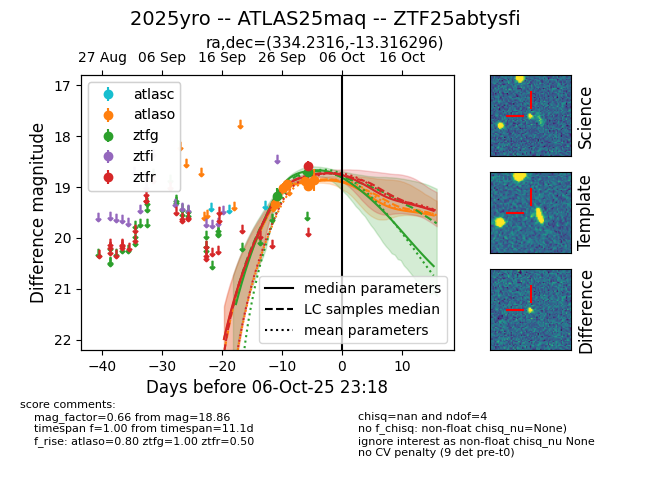
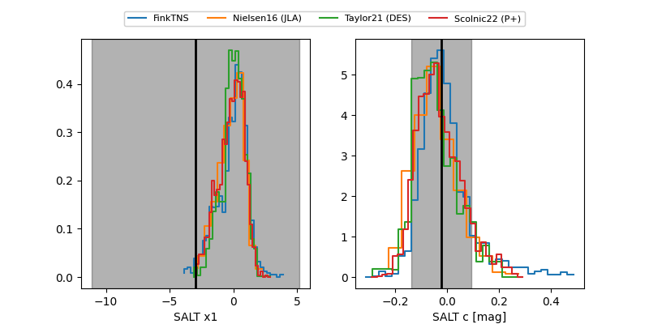

FINK: ZTF25abtysfi
Lasair: ZTF25abtysfi
ALeRCE: ZTF25abtysfi
TNS: 2025yro
YSE: 2025yro
ZTF25abtysfi (ztf,fink)
2025yro (tns,yse)
ATLAS25maq (atlas)
equatorial (ra, dec) = (334.2316,-13.31630)
galactic (l, b) = (46.0581,-51.40779)


last atlaso=18.86, ztfg=18.70, ztfr=18.59
6 atlaso, 2 ztfg, 1 ztfr detections